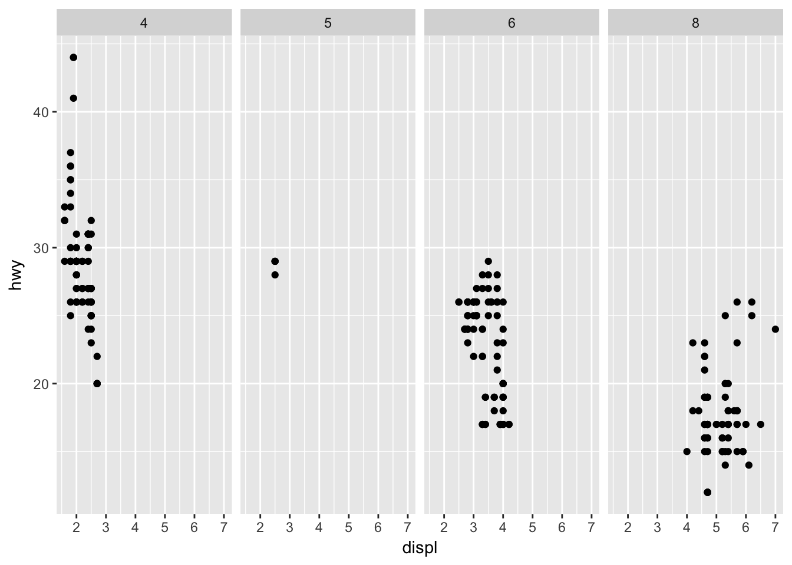
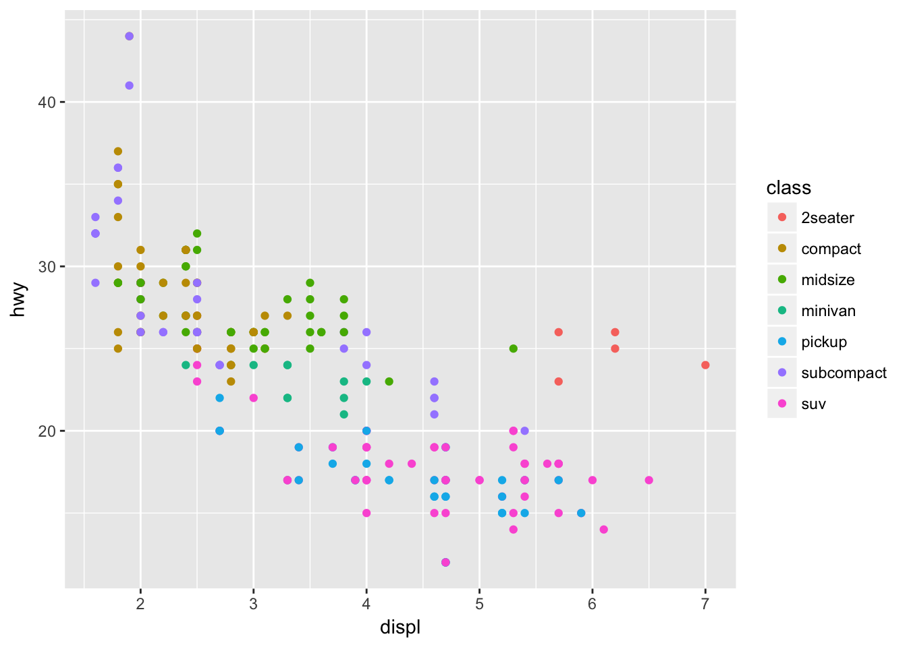
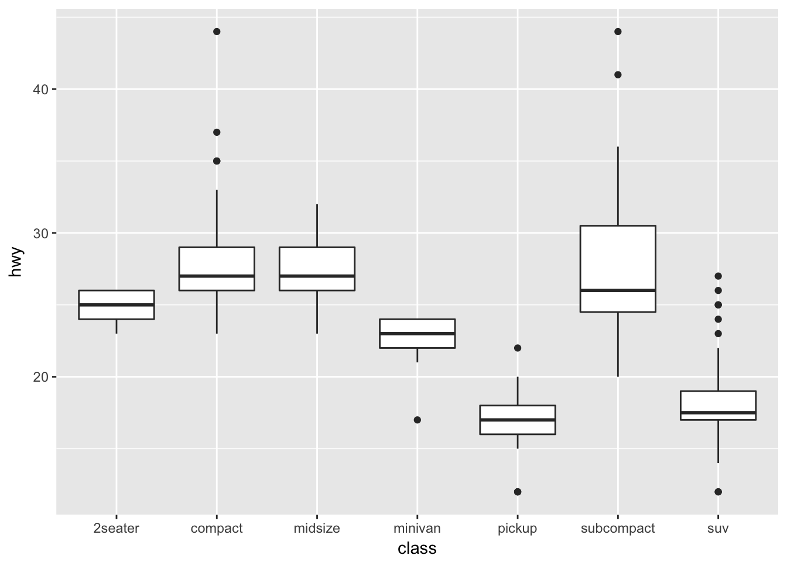
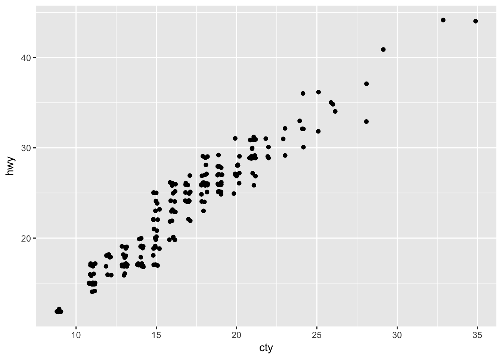
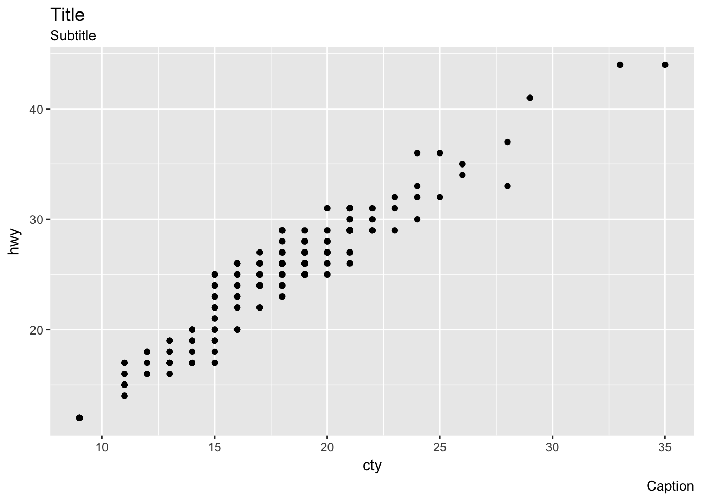
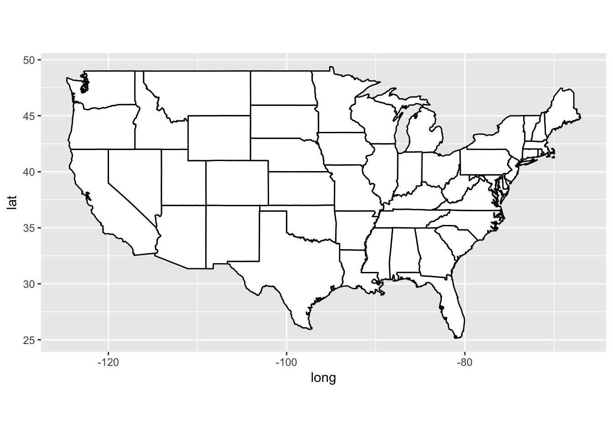

Chapter 3 - Data Visualisation
Load the libraries needed for these exercises.
library(tidyverse)
library(maps)3.2 - First Steps
Problem 1
Run ggplot(data = mpg). What do you see?
The initial ggplot() call creates a a blank plot without any aesthetics.
ggplot(data = mpg)
Problem 2
How many rows are in mpg? How many columns?
Use the nrow() and ncol() functions from base to determine that there are 234 rows and 11 columns in the mpg data set.
nrow(mpg)## [1] 234ncol(mpg)## [1] 11Problem 3
What does the drv variable describe? Read the help for ?mpg to find out.
The variable drv describes the drive of the vehicle: f = front-wheel drive, r = rear wheel drive, 4 = 4wd.
Problem 4
Make a scatter plot of hwy vs cyl.
Set hwy and cyl as the x and y variables within aes(), and use geom_point() to create a scatterplot.
ggplot(data = mpg, mapping = aes(x = cyl, y = hwy)) +
geom_point()
Problem 5
What happens if you make a scatter plot of class vs drv? Why is the plot not useful?
Since class and drv are categorical variables, there isn’t much of a meaningful relationship in the scatter plot.
ggplot(data = mpg, mapping = aes(x = class, y = drv)) +
geom_point()
3.3 - Aesthetic Mappings
Problem 1
What’s gone wrong with this code? Why are the points not blue?
ggplot(data = mpg) +
geom_point(mapping = aes(x = displ, y = hwy, color = "blue"))
To set an aesthetic manually, it must go outside of aes().
ggplot(data = mpg) +
geom_point(mapping = aes(x = displ, y = hwy), color = "blue")Problem 2
Which variables in mpg are categorical? Which variables are continuous? (Hint: type ?mpg to read the documentation for the data set). How can you see this information when you run mpg?
Use str() to see the structure of a dataset.
str(mpg)## Classes 'tbl_df', 'tbl' and 'data.frame': 234 obs. of 11 variables:
## $ manufacturer: chr "audi" "audi" "audi" "audi" ...
## $ model : chr "a4" "a4" "a4" "a4" ...
## $ displ : num 1.8 1.8 2 2 2.8 2.8 3.1 1.8 1.8 2 ...
## $ year : int 1999 1999 2008 2008 1999 1999 2008 1999 1999 2008 ...
## $ cyl : int 4 4 4 4 6 6 6 4 4 4 ...
## $ trans : chr "auto(l5)" "manual(m5)" "manual(m6)" "auto(av)" ...
## $ drv : chr "f" "f" "f" "f" ...
## $ cty : int 18 21 20 21 16 18 18 18 16 20 ...
## $ hwy : int 29 29 31 30 26 26 27 26 25 28 ...
## $ fl : chr "p" "p" "p" "p" ...
## $ class : chr "compact" "compact" "compact" "compact" ...Problem 3
Map a continuous variable to color, size, and shape. How do these aesthetics behave differently for categorical vs. continuous variables?
Continuous variables will use a gradient to scale color and size, but will throw an error when applied to shape.
ggplot(data = mpg, mapping = aes(x = cty, y = hwy, color = displ)) +
geom_point()ggplot(data = mpg, mapping = aes(x = cty, y = hwy, size = displ)) +
geom_point()
p <- ggplot(data = mpg, mapping = aes(x = cty, y = hwy, shape = displ)) +
geom_point()Problem 4
What happens if you map the same variable to multiple aesthetics?
Mapping displ to color and size results in the following graph. Not necessarily helpful, but two ways of displaying the some variation.
ggplot(data = mpg, mapping = aes(x = cty, y = hwy, color = displ, size = displ)) +
geom_point()Problem 5
What does the stroke aesthetic do? What shapes does it work with? (Hint: use ?geom_point)
The stroke aesthetic will modify the width of the border of a shape. Taking the example from the ggplot2 documentation:
ggplot(data = mtcars, mapping = aes(x = wt, y = mpg)) +
geom_point(shape = 21, colour = "black", fill = "white", size = 5, stroke = 5)Problem 6
What happens if you map an aesthetic to something other than a variable name, like aes(colour = displ < 5)?
In this case the condition passed to color returns a boolean that will map to color.
ggplot(data = mtcars, mapping = aes(wt, mpg, color = disp < 100)) +
geom_point()
3.5 - Facets
Problem 1
What happens if you facet on a continuous variable?
The facet_wrap feature will still produce plots for each unique value, but the result is not necessarily helpful.
ggplot(data = mtcars, mapping = aes(disp, mpg)) +
geom_point() +
facet_wrap(~ wt)
Problem 2
What do the empty cells in plot with facet_grid(drv ~ cyl) mean? How do they relate to this plot?
Empty cells occur when there are no observations within a specific combination of facet variables. For instance, in the given plot there are no vehicles with 4wd and 5 cylinders, which matches the empty cell with facet_grid(drv ~ cyl).
ggplot(data = mpg) +
geom_point(mapping = aes(x = drv, y = cyl))
Problem 3
What plots does the following code make? What does . do?
In the first example, using . creates a facet_grid() plot without a column variable.
ggplot(data = mpg) +
geom_point(mapping = aes(x = displ, y = hwy)) +
facet_grid(drv ~ .)
This can be easier than trying to hack together a similar plot using facet_wrap().
ggplot(data = mpg) +
geom_point(mapping = aes(x = displ, y = hwy)) +
facet_wrap(~ drv, nrow = n_distinct(mpg$drv))The . can also be used to make a facet_grid() while omitting a row variable.
ggplot(data = mpg) +
geom_point(mapping = aes(x = displ, y = hwy)) +
facet_grid(. ~ cyl)
Problem 4
Take the first faceted plot in this section. What are the advantages to using faceting instead of the colour aesthetic? What are the disadvantages? How might the balance change if you had a larger dataset?
Faceting can make it easier to see the variation by class than using the color aesthetic, but can be unwieldy when the number of distinct values in class is large. For a larger dataset, faceting may be necessary, as the increased number of points may make it difficult to see a variation by color.
Compare the following plots:
ggplot(data = mpg) +
geom_point(mapping = aes(x = displ, y = hwy)) +
facet_wrap(~ class, nrow = 2)
ggplot(data = mpg) +
geom_point(mapping = aes(x = displ, y = hwy, color = class))
Problem 5
Read ?facet_wrap. What does nrow do? What does ncol do? What other options control the layout of the individual panels? Why doesn’t facet_grid() have nrow and ncol arguments?
The nrow and ncol arguments allow you to control the number of rows or columns in the panel. There are a number of other arguments in facet_wrap(): * scales: can fix scales or allow them to vary * shrink: shrink scales to fit output of statistics, not raw data * labeller: takes one data frame of labels and returns a list or data frame of character vectors * as.table: display facets as a table or a plot * switch: flip the labels * drop: drop unused factor lebels * dir: control direction of the panel * strip.position: control where to place the labels
The facet_grid() function has nrow and ncol predefined by the faceting variables.
Problem 6
When using facet_grid() you should usually put the variable with more unique levels in the columns. Why?
This will expand the panel vertically, making it easier to scroll through the grid. Compare the following two plots:
ggplot(data = mpg) +
geom_point(mapping = aes(x = displ, y = hwy)) +
facet_grid(trans ~ drv)
ggplot(data = mpg) +
geom_point(mapping = aes(x = displ, y = hwy)) +
facet_grid(drv ~ trans)
3.6 - Geometric Objects
Problem 1
What geom would you use to draw a line chart? A boxplot? A histogram? An area chart?
Use geom_line() to draw a line chart.
ggplot(data = economics, mapping = aes(x = date, y = unemploy)) +
geom_line()
Use geom_boxplot() to create a boxplot.
ggplot(data = mpg, mapping = aes(x = class, y = hwy)) +
geom_boxplot()
Use geom_histogram() to create a histogram.
ggplot(data = mpg, mapping = aes(x = hwy)) +
geom_histogram()## `stat_bin()` using `bins = 30`. Pick better value with `binwidth`.
And use geom_area() to create an area chart.
ggplot(data = economics, mapping = aes(x = date, y = unemploy)) +
geom_area()Problem 2
Run this code in your head and predict what the output will look like. Then, run the code in R and check your predictions.
Be sure to think through the initial ggplot call and consider what will be passed to geom_point() and geom_smooth().
ggplot(data = mpg, mapping = aes(x = displ, y = hwy, color = drv)) +
geom_point() +
geom_smooth(se = FALSE)## `geom_smooth()` using method = 'loess'
Problem 3
What does show.legend = FALSE do? What happens if you remove it? Why do you think I used it earlier in the chapter?
The show.legend argument can be used to map a layer to a legend. Setting to FALSE will remove that layer from the plot.
ggplot(data = mpg, mapping = aes(x = displ, y = hwy, color = drv)) +
geom_point(show.legend = FALSE) +
geom_smooth(se = FALSE, show.legend = FALSE)## `geom_smooth()` using method = 'loess'
But note that this only works by geom:
ggplot(data = mpg, mapping = aes(x = displ, y = hwy, color = drv)) +
geom_point(show.legend = FALSE) +
geom_smooth(se = FALSE)## `geom_smooth()` using method = 'loess'
Problem 4
What does the se argument to geom_smooth() do?
The se argument controls whether a confidence band is displayed around the smoothed line. Note that the argument is set to TRUE by default.
ggplot(data = mpg, mapping = aes(x = displ, y = hwy, color = drv)) +
geom_point(show.legend = FALSE) +
geom_smooth()## `geom_smooth()` using method = 'loess'
The level argument is used to control the confidence interval, and is set to 0.95 by default.
ggplot(data = mpg, mapping = aes(x = displ, y = hwy, color = drv)) +
geom_point(show.legend = FALSE) +
geom_smooth(level = 0.9999)## `geom_smooth()` using method = 'loess'
Problem 5
Will these two graphs look different? Why/why not?
The graphs should look the same, as data and aes are inherited by geom_point() and geom_smooth() in the first example.
ggplot(data = mpg, mapping = aes(x = displ, y = hwy)) +
geom_point() +
geom_smooth()## `geom_smooth()` using method = 'loess'
ggplot() +
geom_point(data = mpg, mapping = aes(x = displ, y = hwy)) +
geom_smooth(data = mpg, mapping = aes(x = displ, y = hwy))## `geom_smooth()` using method = 'loess'
Problem 6
Recreate the R code necessary to generate the following graphs.
Be sure to think through how each aes is set and inherited.
ggplot(data = mpg, mapping = aes(x = displ, y = hwy)) +
geom_point() +
geom_smooth(se = FALSE)## `geom_smooth()` using method = 'loess'
ggplot(data = mpg, mapping = aes(x = displ, y = hwy, grp = drv)) +
geom_point() +
geom_smooth(se = FALSE)## `geom_smooth()` using method = 'loess'
ggplot(data = mpg, mapping = aes(x = displ, y = hwy, color = drv)) +
geom_point() +
geom_smooth(se = FALSE)## `geom_smooth()` using method = 'loess'
ggplot(data = mpg, mapping = aes(x = displ, y = hwy)) +
geom_point(aes(color = drv)) +
geom_smooth(se = FALSE)## `geom_smooth()` using method = 'loess'
ggplot(data = mpg, mapping = aes(x = displ, y = hwy)) +
geom_point(aes(color = drv)) +
geom_smooth(aes(linetype = drv), se = FALSE)## `geom_smooth()` using method = 'loess'ggplot(data = mpg, mapping = aes(x = displ, y = hwy, color = drv)) +
geom_point()3.7 - Statistical Transformations
Problem 1
What is the default geom associated with stat_summary()? How could you rewrite the previous plot to use that geom function instead of the stat function?
The default geom associated with stat_summary() is pointrange. Recreate the last plot using:
ggplot(data = diamonds) +
geom_pointrange(
mapping = aes(x = cut, y = depth),
stat = 'summary',
fun.ymin = min,
fun.ymax = max,
fun.y = median
)
Problem 2
What does geom_col() do? How is it different to geom_bar()?
From the ggplot2 documentation: geom_bar() makes the height of the bar proportional to the number of cases in each group, while geom_col() will map directly to the data.
Make a simple bar chart using geom_bar which will transform the data under the hood:
ggplot(mpg, aes(class)) +
geom_bar()Or do the transformation manually and map directly using geom_col:
mpg %>%
group_by(class) %>%
count() %>%
ggplot(aes(class, n)) +
geom_col()
Problem 3
Most geoms and stats come in pairs that are almost always used in concert. Read through the documentation and make a list of all the pairs. What do they have in common?
Some examples from the ggplot2 documentation include:
geom_bar–>stat_countgeom_bin2d–>stat_bin_2dgeom_boxplot–>stat_boxplotgeom_contour–>stat_contourgeom_count–>stat_sumgeom_density–>stat_densitygeom_density_2d–>stat_density_2dgeom_histogram–>stat_bingeom_hex–>stat_bin_hex
Problem 4
What variables does stat_smooth() compute? What parameters control its behavior?
stat_smooth computes the following:
y- the predicted valueymin- lower pointwise confidence interval around the meanymax- upper pointwise confidence interval around the meanse- standard error
The behaviour of stat_smooth can be controled using:
methodto adjust the smoothing method usedformulato adjust the smoothing formula usedspanto adjust the amount of smoothinglevelto set the confidence level used
Problem 5
In our proportion bar chart, we need to set group = 1. Why? In other words what is the problem with these two graphs?
The first chart displays a proportion = 1 for all groups.
ggplot(data = diamonds) +
geom_bar(mapping = aes(x = cut, y = ..prop..))
While the second plot does something similar, multiplied by the number of categories in color.
ggplot(data = diamonds) +
geom_bar(mapping = aes(x = cut, fill = color, y = ..prop..))
geom_bar() will compute prop - the groupwise proportion. So pass in an argument to group for prop to be calculated properly.
ggplot(data = diamonds) +
geom_bar(mapping = aes(x = cut, y = ..prop.., group = 1))
ggplot(data = diamonds) +
geom_bar(mapping = aes(x = cut, y = ..prop.., fill = color, group = color))
3.8 - Position Adjustments
Problem 1
What is the problem with this plot? How could you improve it?
ggplot(data = mpg, mapping = aes(x = cty, y = hwy)) +
geom_point()Use geom_jitter() to correct the overplotting in the original.
ggplot(data = mpg, mapping = aes(x = cty, y = hwy)) +
geom_jitter()
Problem 2
What parameters to geom_jitter() control the amount of jittering?
The width and height arguments control the amount of jittering and defaults to 40% of the resolution of the data.
So values less than 0.4 will make a graph more compact than the default geom_jitter() and values greater than 0.4 will make the graph more spread out.
ggplot(data = mpg, mapping = aes(x = cty, y = hwy)) +
geom_jitter(width = 0.20, height = 0.20)
While values greater than 0.4 will make a smoother graph.
ggplot(data = mpg, mapping = aes(x = cty, y = hwy)) +
geom_jitter(width = 0.60, height = 0.60)
Problem 3
Compare and contrast geom_jitter() with geom_count().
geom_jitter() and geom_count() are both useful when dealing with overplotting. While geom_jitter will add a small amount of noise to each point to spread them out, geom_count will count the number of observations at each (x,y) point, and then map the count.
geom_jitter() is equivalent to geom_point(position = 'jitter') geom_count() is equivalent to geom_point(stat = 'sum')
ggplot(data = mpg, mapping = aes(x = cty, y = hwy)) +
geom_count() 
Problem 4
What’s the default position adjustment for geom_boxplot()? Create a visualisation of the mpg dataset that demonstrates it.
The default position adjustment for geom_boxplot() is dodge.
ggplot(data = mpg, aes(x = class, y = cty, color = drv)) +
geom_boxplot()
ggplot(data = mpg, aes(x = class, y = cty, color = drv)) +
geom_boxplot(position = 'identity')3.9 - Coordinate Systems
Problem 1
Turn a stacked bar chart into a pie chart using coord_polar().
From the documentation for coord_polar() - first make a stacked bar chart:
ggplot(data = mtcars, aes(x = factor(1), fill = factor(cyl))) +
geom_bar()And then turn it into a pie chart:
ggplot(data = mtcars, aes(x = factor(1), fill = factor(cyl))) +
geom_bar(width = 1) +
coord_polar(theta = 'y')
Problem 2
What does labs() do? Read the documentation.
labs() controls the labels of a plot, axis, or legend.
ggplot(mpg, aes(cty, hwy)) +
geom_point() +
labs(title = 'Title',
subtitle = 'Subtitle',
caption = 'Caption')
Problem 3
What’s the difference between coord_quickmap() and coord_map()?
coord_quickmap() preserves straight lines when projecting onto a two dimensional surface and requires less computation.
ggplot(map_data('state'), aes(long, lat, group = group)) +
geom_polygon(fill = 'white', color = 'black') +
coord_map()
ggplot(map_data('state'), aes(long, lat, group = group)) +
geom_polygon(fill = 'white', color = 'black') +
coord_quickmap()
Problem 4
What does the plot below tell you about the relationship between city and highway mpg? Why is coord_fixed() important? What does geom_abline() do?
coord_fixed() (with no arguments) ensures that a unit on the x-axis is the same length as a unit on the y-axis.
geom_abline() (with no arguments) adds a reference line with an intercept of 0 and a slope of 1. One can quickly see that every observation in the mpg dataset has better highway than city fuel efficiency.
ggplot(data = mpg, mapping = aes(x = cty, y = hwy)) +
geom_point() +
geom_abline() +
coord_fixed()